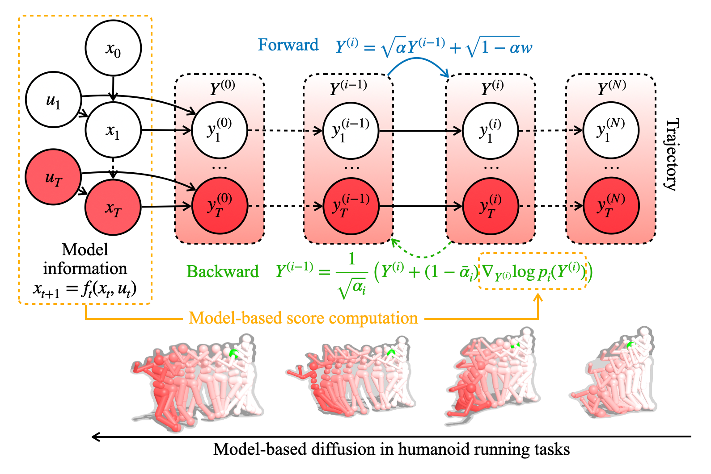
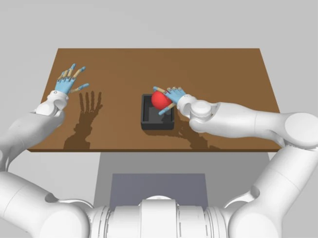
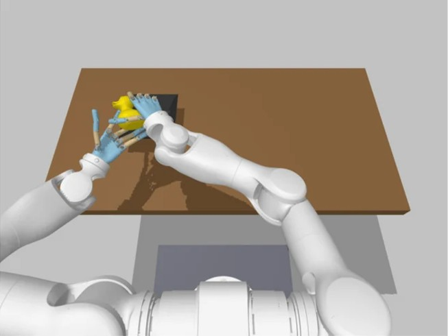
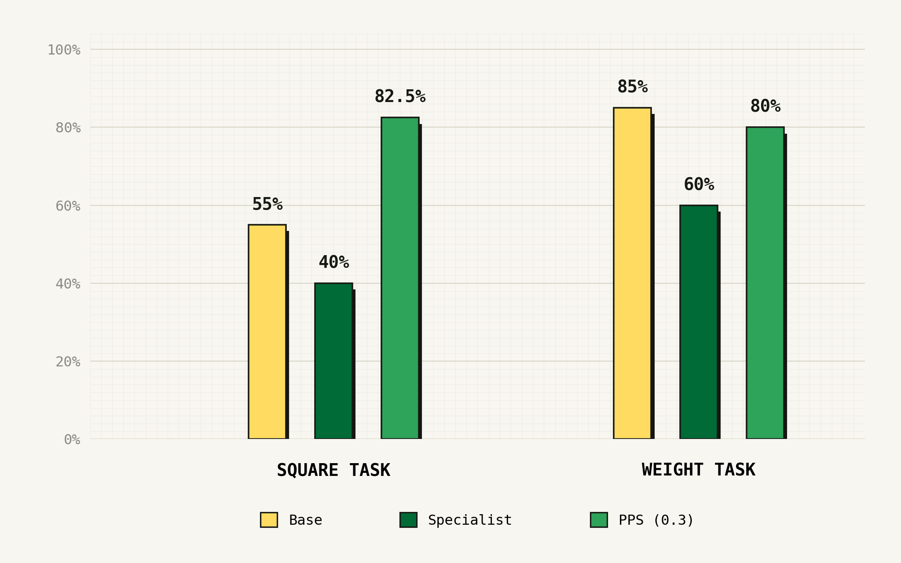
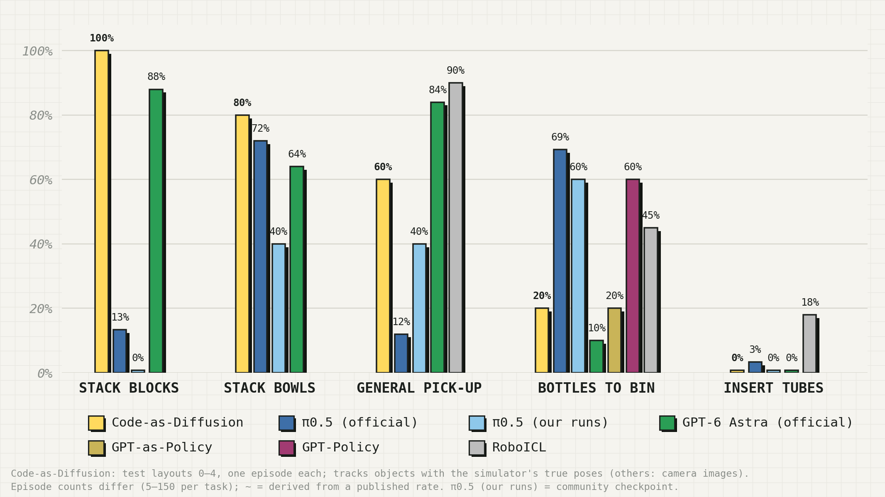

05ResultsTasks, quantitative results, and rollouts
→
06SummarySummary and next steps
Outline
01 · Motivation
Motivation
How can we leverage pre-trained VLMs for robotic control?
VLMs are getting better and better! But how to best maximize them for robotic control? 🤔🤖
Code as PoliciesLiang et al., ICRA 2023ASPIRE2026
02 · Background
VLM-Based Robotic Control
VLMs offer broad priors and promising zero-shot manipulation
VoxPoser3D value mapsHuang et al., CoRL 2023MOKAKeypoint affordancesLiu et al., RSS 2024ReKepKeypoint constraintsHuang et al., CoRL 2024CaP-XCodeICML 2026
02 · Background
VLM-Based Robotic Control
VLMs offer broad priors and promising zero-shot manipulation, but lack a natural interface for fine-grained task specialization
✓Good at reasoning, broad priors, failure recovery✗Fails at fine-grained dexterity and specialization
🤔 What are some ways to specialize or “steer” policies to fine-grained actions?
02 · Background
Diffusion Policy Steering
Policy steering enables few-shot specialization and steering to task-specific behavior, but it assumes a trained diffusion or flow-matching policy
DSRL: Diffusion Steering via Reinforcement LearningWagenmaker et al., 2025PPS: Proxy Policy Steering2025
02 · Background
Research Goal
How can we connect these two paradigms?
VLM-based robotic control
StrengthBroad priors, zero-shot
GapCannot specialize: not a diffusion policy
Policy steering
StrengthCan specialize, few-shot
GapNeeds a diffusion policy, often from large-scale training
Goal: can we turn VLM-based control into a steerable diffusion process, without large-scale training?
03 · Approach
Key Insight: Training-Free Diffusion
Training-free diffusion enables generative sampling without training a denoising network, but existing approaches often rely on predefined dynamics, costs, or constraints.

Model-Based DiffusionPan et al., NeurIPS 2024DIAL-MPCXue et al., ICRA 2025
🤔 What if we instead construct the action distribution from direct VLM prompting?
03 · Approach
Our Idea: Code-as-Diffusion
Key Idea: Formalize VLM-generated code into an analytical, training-free diffusion policy
Bridging zero-shot control and few-shot specialization
1VLM writes code
→
2Analytical diffusion policy
→
3Steerable actions
VLM
# "Put the mug on the rack"
handle = find("mug handle")
for side in ["left", "right"]:
propose(grasp(handle, side))
Writes code that proposes motions
→
Analytical diffusion policy
Noise to actions, no training
→
Steerable actions
Few-shot, e.g. with PPS or DSRL
VLM
→
Analytical diffusion policy
Motion proposals
→
Gaussian mixture
→
Flow sampling
→
Robot actions
03 · Approach
Our Idea: Code-as-Diffusion
Observation 1: Agent Code Is Good at Manipulation
CaP-XICML 2026ASPIRE2026
Figure: Code as PoliciesLiang et al., ICRA 2023
📝Takeaway: We can leverage agent-generated code to directly produce robot action chunks.
03 · Approach
Our Idea: Code-as-Diffusion
Observation 2: GMMs Have Closed-Form Diffusion Scores
1Decompose
→
2Anneal
→
3Recompose and compute score
Closed form at every noise level
Mixturep0(x) = Σkwk 𝒩(x; μk, σk2)
Each component, noised𝒩(x; αtμk, αt2σk2 + σt2)
Recomposedpt(x) = Σkwk 𝒩k,t(x)
Score∇ log pt(x) = Σkγk(x) αtμk − xαt2σk2 + σt2
γk(x): weight of component k at x
📝Takeaway: We should leverage GMM structure in our target distribution.
🎉 Voila! Code-as-Diffusion is deterministic, smooth, multimodal, and has strong priors!
Our Idea: Code-as-Diffusion
What this formulation enables
Broad zero-shot capabilitiesVLM priors without large-scale robot data
Few-shot Task SteeringDiffusion steering with DSRL & PPS
Embodiment flexibilityEfficiently adapt to single-arm, dual-arm and dexterous-hand robots
05 · Results
Tasks
Single-ArmPPS Tasks
Dual-ArmRoboDojo
Dual-DexterousSpatialDex Tasks


🦾 Now time to test it! Can we maintain zero-shot priors and also steer with our method to improve performance?
⚠ Note: Results are preliminary, and evaluations are still ongoing for some of the listed tasks.
05 · Results
Quantitative Results

⚠ Note: Results are preliminary, and evaluations are still ongoing for some of the listed tasks.
05 · Results
Rollout Visualization (Success)
Weight Task
Seed 5Seed 6Seed 10
Lines in each frameCode-as-DiffusionReferenceTaskPPS (executed)Four-path policy visualization · PPS weight 0.5
⚠ Note: Results are preliminary, and evaluations are still ongoing for some of the listed tasks.
05 · Results
Rollout Visualization (Success)
Square Task
Seed 20Seed 24Seed 21
Lines in each frameCode-as-DiffusionReferenceTaskPPS (executed)Four-path policy visualization · PPS weight 0.5
⚠ Note: Results are preliminary, and evaluations are still ongoing for some of the listed tasks.
05 · Results
Quantitative Results

Published numbers: the RoboDojo leaderboard (robodojo-benchmark.com) and each project's page.
Code-as-Diffusion is good at reasoning and pick-and-place, but bad at orientation and handover-coordination tasks, which we expect PPS and steering to help.
⚠ Note: Results are preliminary, and evaluations are still ongoing for some of the listed tasks.
05 · Results
Rollout Visualization (Success)
Code-as-Diffusion shows reliable zero-shot performance on general tasks
Stack Bowls
General Pick-Up
“Pick up the blue race toy car”“Pick up the white toy car”
⚠ Note: Results are preliminary, and evaluations are still ongoing for some of the listed tasks.
05 · Results
Rollout Visualization (Success)
RoboDojo: Stack Bowls
Layout 3success · 10.9 sLayout 1success · 11.5 s
⚠ Note: Results are preliminary, and evaluations are still ongoing for some of the listed tasks.
05 · Results
Rollout Visualization (Success)
RoboDojo: General Pick-Up
Layout 4 · “Pick up the blue race toy car”success · 3.5 sLayout 3 · “Pick up the white toy car”success · 2.9 s
⚠ Note: Results are preliminary, and evaluations are still ongoing for some of the listed tasks.
05 · Results
Rollout Visualization (Failure)
However, fine-grained tasks remain a challenge, which few-shot steering can solve
Bottles to Bin
Drops a bottle while liftingDrops a bottle in the handover
Insert Tubes
Releases a tube too highTube not seated in the rack
⚠ Note: Results are preliminary, and evaluations are still ongoing for some of the listed tasks.
05 · Results
Rollout Visualization (Failure)
RoboDojo: Bottles to Bin
Layout 0 · score 10one bottle in the bin; a lift toward the centre is dropped (~26 s)Layout 2 · score 25two bottles in; the handover of the second drops it once (~15 s)
⚠ Note: Results are preliminary, and evaluations are still ongoing for some of the listed tasks.
05 · Results
Rollout Visualization (Failure)
RoboDojo: Insert Tubes
Layout 1 · score 40two tubes in; the third is released 5 cm above the rack and rolls awayLayout 2 · score 20one tube in; the second does not count; the third stays on the table
⚠ Note: Results are preliminary, and evaluations are still ongoing for some of the listed tasks.
05 · Results
Current Limitations
Struggles with articulations.
Occlusions still need to be addressed.
05 · Results
Code-as-Diffusion
🚀 Our base maintains VLM priors while enabling few‑shot steering across diverse tasks and embodiments
✓
Broad zero-shot capabilities
✓
Few-shot Task Steering
✓
Embodiment flexibility
⚠ Note: Results are preliminary, and evaluations are still ongoing for some of the listed tasks.
06 · Discussion
Summary & Next Steps
Thank you for listening!
1VLM writes code
→
2Analytical diffusion policy
→
3Steerable actions
Appendix
How PPS Works
Steer a frozen diffusion policy with the difference of two small proxy models
1 · Train two small proxies (offline)
Base policyfrozen diffusion / flow policy, e.g. π0.5
↓distill the base's velocity along its own denoising path
Reference proxy vrefa small copy of the base's behavior
↓initialize from the reference, then fine-tune on a few task demos
Task proxy vtaskthe same model, shifted toward the demos
γi(x): softmax weight of training point i at x, from −‖x − αtxi‖2 / 2σt2
The exact score memorizesSampling with it returns the training points themselves, so it generates nothing new.
Smoothing generalizesSmoothing the closed-form score gives new samples between nearby training points; a nearest-neighbor estimate keeps it fast, even on CPUs.
Link to Code-as-DiffusionOur Step 2 is a smoothed closed-form diffusion whose "training set" is the action chunks sampled from the VLM's program.
Training-free diffusion from a set of samples: Code-as-Diffusion gets these samples from a VLM-written program
06 · Discussion
Open Questions
What we still need to answer
[Placeholder: this slide is empty in the Google deck.]
06 · Discussion
Next Steps
What we plan to do next
[Placeholder: this slide is empty in the Google deck.]
03 · Approach
Our Idea: Code-as-Diffusion
What this formulation enables
01
Broad zero-shot capabilitiesUse VLM priors without large-scale robot action pretraining.
02
Fine-grained task specializationAdapt Code-as-Diffusion with existing steering methods (for example PPS and DSRL).
03
Embodiment flexibilityApply the same framework to single-arm, dual-arm and dexterous-hand robots.
Appendix
Structure
Draft outline
Intro
Related work / preliminaries
VLM agentic control
Diffusion steering + analytical diffusion
Idea: combine them (VLM front end)
Property analysis
(Initial) results
Next steps / future work
Open questions
Appendix
Idea: VLM as Diffusion Policy
Formulate the VLM as a diffusion or flow-matching process
Zero-shot base with the VLM prior
Adapt to new, harder tasks through steering
Foundation policy (as VLAs; steerable as with DSRL)
Multiple embodiments
This lets us formulate our base as a flow-matching or diffusion process.
Appendix
Diffusion and Flow-Matching VLAs
Related work
Figure: π0Black et al., 2024
Strengths: broad priors, recovery behaviors and fine-tunability.
Limitations: they need large-scale pretraining; fine-tuning is computationally expensive, risks degrading generalization, and needs access to the model weights, which excludes closed-source or API-only policies.
Appendix
Diffusion Steering via Reinforcement Learning
Related work: DSRL
Figure: DSRLWagenmaker et al., 2025
DSRL optimizes the initial noise with RL. It needs non-zero base success or a large offline dataset, and it gains little on tasks the base can hardly solve.
Appendix
Proxy Policy Steering
Related work: PPS
Figure: Proxy Policy Steering2025
[Placeholder] "Compared to DSRL, PPS …" (unfinished in the Google deck)
Appendix
Related Work: Summary
What we have established
VLA
VLAsBroad generalist capabilities, but they need large-scale robot pretraining; fine-tuning is expensive and can degrade generalization.
STEER
Policy steeringTask specialization without modifying the base, but it needs a diffusion or flow-matching interface.
VLM
VLM-based controlPromising zero-shot capabilities without robot action pretraining, but no natural interface for few-shot specialization.
Can we combine the zero-shot generality of VLM-based control with the few-shot steerability of diffusion policies, without large-scale robot action pretraining?
Appendix
References
Works cited in this deck
Code as Policies: Language Model Programs for Embodied ControlLiang et al., ICRA 2023
VoxPoser: Composable 3D Value Maps for Robotic Manipulation with Language ModelsHuang et al., CoRL 2023
ReKep: Spatio-Temporal Reasoning of Relational Keypoint Constraints for Robotic ManipulationHuang et al., CoRL 2024
MOKA: Open-World Robotic Manipulation through Mark-Based Visual PromptingLiu et al., RSS 2024
CaP-X: A Framework for Benchmarking and Improving Coding Agents for Robot ManipulationICML 2026
Model-Based Diffusion for Trajectory OptimizationPan et al., NeurIPS 2024
Full-Order Sampling-Based MPC for Torque-Level Locomotion Control via Diffusion-Style Annealing (DIAL-MPC)Xue et al., ICRA 2025
Steering Your Diffusion Policy with Latent Space Reinforcement Learning (DSRL)Wagenmaker et al., 2025
Proxy Policy Steering (PPS)2025
π0: A Vision-Language-Action Flow Model for General Robot ControlBlack et al., 2024
ASPIRE2026
RoboDojo benchmark and leaderboardrobodojo-benchmark.com


 Published numbers: the RoboDojo leaderboard (robodojo-benchmark.com) and each project's page.
Published numbers: the RoboDojo leaderboard (robodojo-benchmark.com) and each project's page.